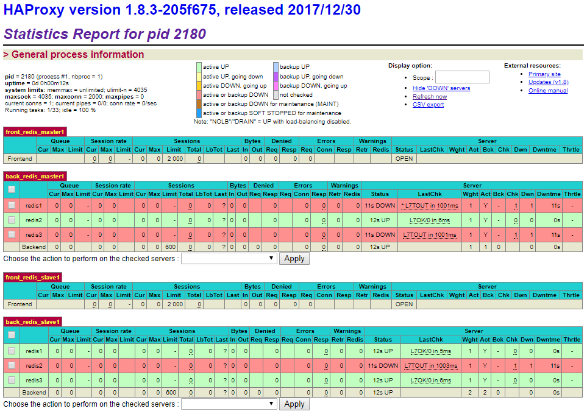
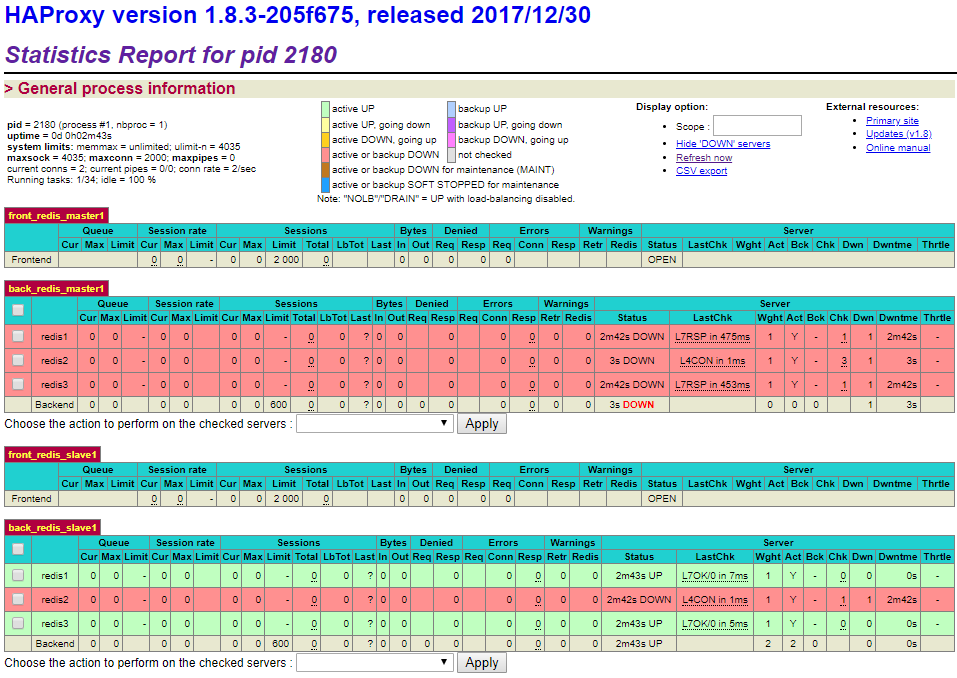
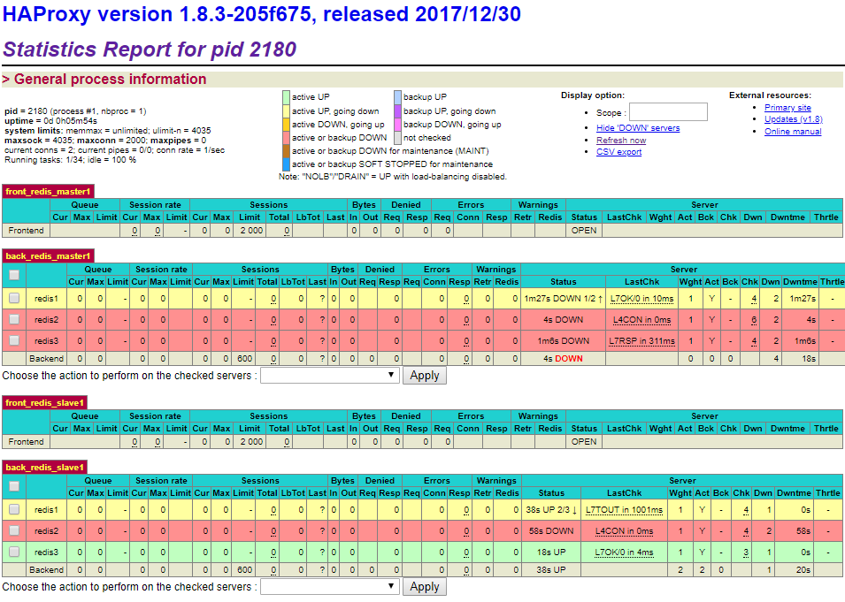
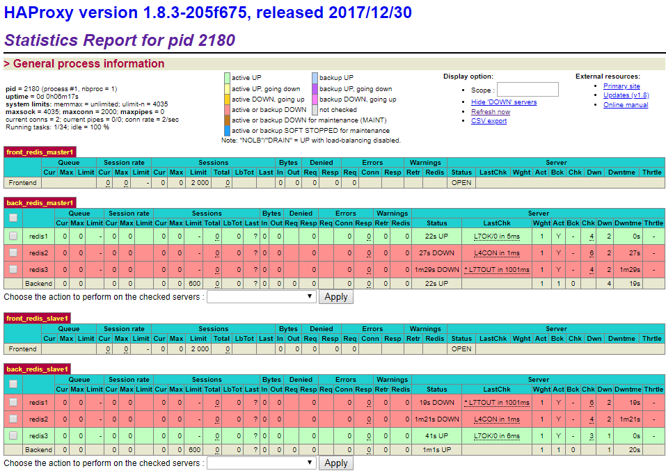
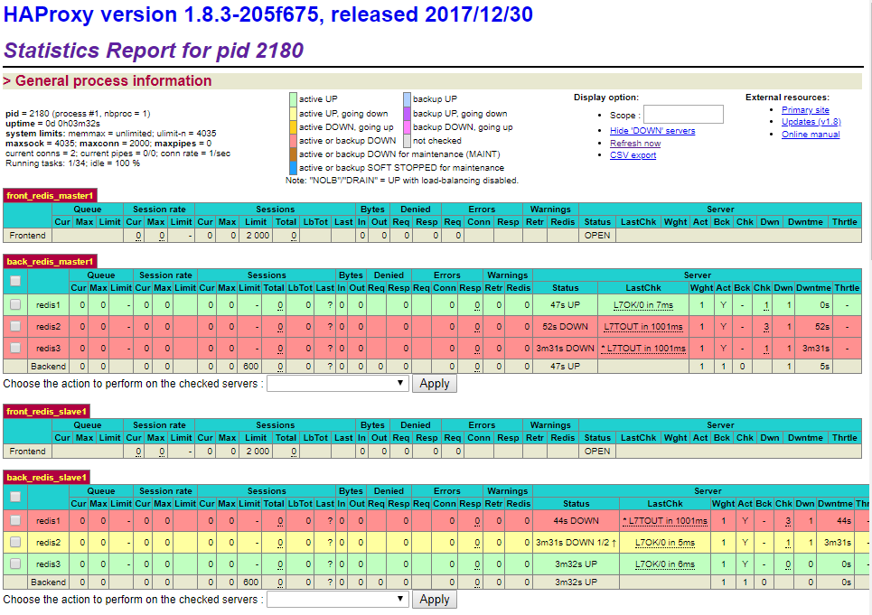
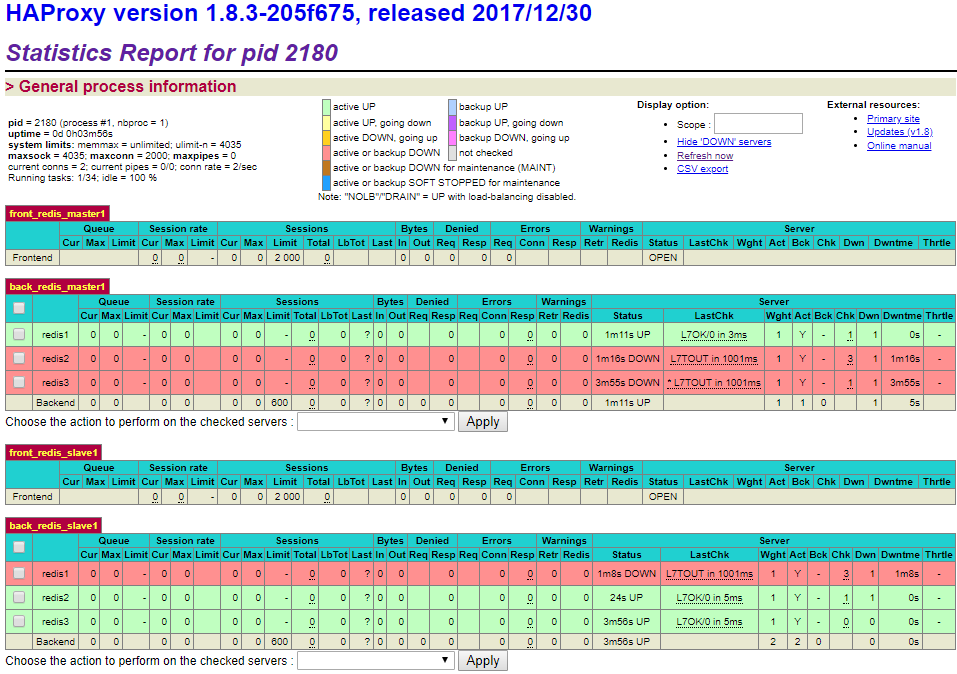

HAProxy란?
HAProxy는 기존의 하드웨어 스위치(L4/L7)을 대체하는 소프트웨어 로드밸런서입니다. 로드 밸런싱이란 부하 분산을 위해서 가상IP를 통해 여러서버에 접속하도록 트래픽을 분배해 주는 기능을 의미합니다.
Redis-Cluster에 HAProxy가 필요한 이유
Redis Cluster에서는 Failover가 일어날 수 있습니다.
처음에 1번이 Master였다가, 2번이 Master가 되고, 3번이 Master가 될 수 있습니다. 하지만 Redis Cluster를 사용하는 Application에서 항상 바뀌는 Master의 포트정보를 찾는것은 매우 비용을 낭비하는 행위라 볼 수 있습니다.
따라서 HAProxy에서 Health check를 하면서 실시간으로 Master를 찾아 신호를 보내줄 수 있기 때문에 HAProxy를 Redis-Cluster에 접목하였습니다.
다시 한번 보는 Redis Cluster 구성도

HAProxy Port를 6개를 지정합니다. (각각 1개는 Master Port, Slave Port라고 가정하고 (1(master)+1(slave)) x 3 (서버대수))
5000, 5002, 5004번 Port는 각 서버의 Master Redis를 체크합니다. 따라서 5000, 5002, 5004으로 들어온 요청은 각각의 서버의 Master Redis에 전달 됩니다.
다음으로 5001, 5003, 5005번 Port는 각 서버의 Slave Redis를 체크합니다. 따라서 5001, 5003, 5005으로 들어온 요청은 각각의 서버의 Slave Redis들에게 전달됩니다. (HAProxy에는 여러 서버에 대한 분배방식을 설정 할 수 있는데 고루게 요청할 수 있도록 RoundRobin 방식으로 설정하였습니다)
HAProxy 설치방법
1
2
3
4
5
6
7
8
9
10
11
12
13
14
15
16
17# 관련 모듈을 yum으로 설치한다.
yum install gcc gcc-c++ pcre-devel openssl-devel
# wget명령어도 haproxy 다운로드
wget http://www.haproxy.org/download/1.8/src/haproxy-1.8.3.tar.gz
# 압축을 풀어준다.
tar zxvf haproxy-1.8.3.tar.gz
# 디렉토리 이동
cd haproxy-1.8.3
# c파일을 컴파일 해준다. https 사용이 필요한 경우 USE_OPENSSL=1 설정 추가
make TARGET=linux2628 USE_PCRE=1 USE_OPENSSL=1 USE_ZLIB=1
# /usr/local/haproxy 디렉토리에 설치
make PREFIX=/usr/local/haproxy DESTDIR= install
haproxy.cfg 파일 작성
haproxy.cfg 파일을 작성 할 때는 크게 2가지 관점으로 작성합니다.
- frontend : haproxy에서 사용할 포트 설정, 포트로 신호가 왔을 시 실행할 backend 연결
- backend : frontend로 부터 온 신호를 바탕으로 연결가능한 서버에 트래픽을 분배
1
2
3
4
5
6
7
8
9
10
11
12
13
14
15
16
17
18
19
20
21
22
23
24
25
26
27
28
29
30
31
32
33
34
35
36
37
38
39
40
41
42
43
44
45
46
47
48
49
50
51
52
53
54
55
56
57
58
59
60
61
62
63
64
65
66
67
68
69
70
71
72
73
74
global
log 127.0.0.1 local0
log 127.0.0.1 local1 notice
defaults REDIS
mode tcp
timeout connect 4s
timeout server 15s
timeout client 15s
# timeout tunnel 365d
frontend front_redis_master1
bind *:5000 name redis #5000번 포트에 대한 bind 정보입니다.
default_backend back_redis_master1 #5000번 포트로 신호가 들어오면 backend를 실행
backend back_redis_master1
option tcp-check #tcp-check를 통해 접근가능한 서버 필터링
tcp-check send AUTH\ password1234\r\n #비밀번호 password1234를 입력하고 Redis 서버에 접속합니다.
tcp-check expect string +OK #OK가 왔는지?
tcp-check send PING\r\n #PING을 날려 신호를 점검합니다.
tcp-check expect string +PONG #PONG이라는 응답이 왔는지?
tcp-check send info\ replication\r\n #info replication 명령을 날려 Redis에 대한 정보를 받아옵니다.
tcp-check expect string role:master #role이 master인지 확인 합니다.
#repl_backlog_active의 값이 1인지 확인합니다
#이 조건을 추가한 이유는 Failover간 잠시의 시간동안 Master가 2대가 되는데 그것을 방지 하기 위함입니다.
#(진짜 Master Redis에만 1, slave는 0)
tcp-check expect string repl_backlog_active:1
tcp-check send QUIT\r\n #QUIT 명령을 전송
tcp-check expect string +OK
server redis1 192.168.137.101:6379 check inter 1s #1초 단위로 해당 ip의 port로 체크합니다.
server redis2 192.168.137.101:6380 check inter 1s #1초 단위로 해당 ip의 port로 체크합니다.
server redis3 192.168.137.101:6381 check inter 1s #1초 단위로 해당 ip의 port로 체크합니다.
frontend front_redis_slave1
bind *:5001 name redis #5001번 포트에 대한 bind 정보입니다.
default_backend back_redis_slave1
backend back_redis_slave1
balance roundrobin #라운드 로빈 방식으로 분배
option tcp-check
tcp-check send AUTH\ password1234\r\n
tcp-check expect string +OK
tcp-check send PING\r\n
tcp-check expect string +PONG
tcp-check send info\ replication\r\n
tcp-check expect string role:slave #role key가 slave인지 확인 합니다.
tcp-check send QUIT\r\n
tcp-check expect string +OK
server redis1 192.168.137.101:6379 check inter 1s #1초 단위로 해당 ip의 port로 체크합니다.
server redis2 192.168.137.101:6380 check inter 1s #1초 단위로 해당 ip의 port로 체크합니다.
server redis3 192.168.137.101:6381 check inter 1s #1초 단위로 해당 ip의 port로 체크합니다.
#Listen on all IP's on port 9000 //9000 포트로 접근 시, Web Console에 진입할 수 있습니다.
listen stats
bind 0.0.0.0:9000
mode http
balance
timeout client 5000
timeout connect 4000
timeout server 30000
#This is the virtual URL to access the stats page
stats uri /haproxy_stats //URL주소는 ip:9000/haproxy_stats입니다.
#Authentication realm. This can be set to anything. Escape space characters with a backslash.
stats realm HAProxy\ Statistics
#The user/pass you want to use. Change this password!
stats auth admin:1234 #Web Console에 접근하는 계정/암호 설정
#This allows you to take down and bring up back end servers.
#This will produce an error on older versions of HAProxy.
stats admin if TRUE
위의 내용에서는 일단 하나의 Master-Slave에 대한 설정값만 있습니다. 여태까지 설치 내용에서는 Master-Slave 구성이 3세트이기 때문에 실제 haproxy.cfg를 작성 할 경우에는 5002~5005번 포트를 사용하는 설정에 대해서도 추가해야 합니다.
HAProxy Web Console 확인하기

haproxy-server-ip:9000 으로 접속하였습니다 현재 192.168.137.101 서버에는 6379, 6380, 6381 포트를 사용하는 Redis 노드가 3개가 동작하고 있습니다. 현재 master 역할을 수행하는 것은 6380 포트를 사용하는 redis2 노드입니다. 따라서 haproxy-server-ip:5000 으로 접속하게 되면 redis2 노드에 신호가 분배되어 Redis master서버에 대한 명령을 실행 할 수 있습니다.
현재 slave 역할을 수행하는 것은 6379, 6381포트를 사용하는 redis1, redis3노드 입니다. 따라서 haproxy-server-ip:5001으로 접속하게 되면 RoundRobin 방식으로 redis1, redis3 노드에 신호가 분배되어 Redis slave 서버에 대한 명령을 실행 할 수 있습니다
HAProxy를 구성한 이유
Application에서 Redis를 사용하면서, Master에만 데이터를 입력하고, Slave에서만 데이터를 조회하려는 행위를 많이 하게 됩니다. 아무래도 Redis서버에 대한 부하를 줄여주고자 이러한 행위를 하게 되는데, Haproxy를 설정 해 두면, Application Server에서 failover로 인해 변하는 master/slave 포트에 대한 걱정을 할 필요가 없습니다. HAProxy에서 알아서 tcp-check를 통해 master/slave를 정해주기 때문입니다.
Failover Test
Sentinel 테스트와 동일하게 Master를 죽여보도록 하겠습니다.
1
docker stop <master-node-id>

Master node를 죽이니, 5000번 포트에서는 더이상 master로 갈 수 있는 서버가 없다고 나옵니다. (이 때 순단을 최소화 하려면 failover 시간과, HAProxy tcp-check 시간을 최소로 줄여야 합니다.)

잠시 시간이 지나고 Redis Failover가 진행됩니다. 진행이 완료되면, HAProxy에서도 tcp-check가 이루어집니다.

tcp-check가 끝나고 redis1 노드가 master로 선출되어, 5000번 포트로 접근 시, redis1 노드로 분산되게 됩니다.
다시, 죽었던 redis2 노드를 살려보겠습니다.
1
docker start <redis2_node_id>

redis2 노드가 다시 살아나고, sentinel에서도 role-change 작업이 이루어집니다. 곧이어, HAProxy에서도 tcp-check를 통해 redis2노드가 slave가 되었음을 확인하고 5001 포트에서 분배가능한 서버로 분류됩니다.

이와 같이 Application Server에서는 무조건 master port는 5000번, slave port는 5001번 이라고만 알고 있으면 Redis서버에서 failover가 진행되더라도, 설정을 바꿀 필요없이 사용이 가능합니다.
참고
- http://blog.whitelife.co.kr/321